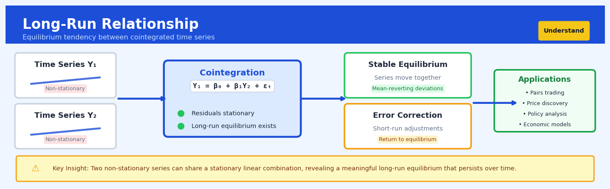

Long-Run Relationship#


The most common mistake is assuming that just because two time series trend together visually, they have a long-run relationship. You need to formally test for cointegration and verify that the residuals from the equilibrium equation are stationary, otherwise you're just modeling spurious correlation. Always run unit root tests on your residuals before claiming you've found a stable economic relationship.
The 60-Second Version#
What it does: Long-run relationship analysis detects whether two variables that fluctuate unpredictably over time are nonetheless bound together by a stable equilibrium relationship.
When to use it: Use this when you have trending variables—like oil prices and airline stocks, or wage levels and consumer spending—and need to distinguish genuine economic linkages from coincidental movements in the same direction.
What you get back: A statistical verdict on whether a long-run equilibrium exists, plus estimates of that equilibrium relationship you can use to forecast one variable from another or detect when the relationship is temporarily out of balance.
Difficulty |
Advanced |
Typical runtime |
Seconds on 10K time points |
What you bring |
Two or more time series with trending behavior |
What you get |
Equilibrium relationship coefficients and statistical tests |
Heuristix bucket |
Understand — Statistical Analysis & Profiling |
If variables trend together purely by coincidence, any forecast model you build will fail catastrophically—long-run relationship analysis protects you from this expensive mistake.
Learning Objectives#
After reading this chapter, a business user will be able to:
Identify situations where two or more trending business metrics (like sales and advertising spend, or prices across related markets) might share a genuine long-term equilibrium relationship rather than just moving together by coincidence.
Interpret cointegration test results to determine whether observed co-movements between variables represent stable, actionable relationships or spurious correlations that should not inform strategy.
Decide whether short-term deviations between related metrics (such as temporary price gaps between regional markets) represent profitable opportunities or noise, based on the strength and speed of mean reversion to equilibrium.
After reading this chapter, a data scientist will be able to:
Implement the Engle-Granger two-step procedure and Johansen test to detect cointegration relationships, correctly handling preprocessing requirements like unit root testing and lag selection.
Select appropriate test specifications (trend assumptions, lag lengths, and deterministic components) by evaluating the economic context and diagnostic statistics, understanding how each choice affects test power and interpretation.
Diagnose common failure modes including structural breaks that invalidate cointegration, near-unit-root behavior that mimics cointegration, and misspecified dynamics that produce unreliable equilibrium estimates.
Overview#
Long-run relationship analysis, primarily operationalised through cointegration testing, identifies stable equilibrium relationships between non-stationary time series that persist despite short-term deviations. This technique belongs to the family of time series econometrics methods and serves as the foundation for error correction models, enabling analysts to distinguish between spurious correlations in trending data and genuine economic linkages. The core insight is that while individual series may wander unpredictably (unit root processes), certain linear combinations of these series remain stationary—a phenomenon that implies a binding long-run equilibrium enforced by economic or physical constraints.
When to Use This#
Use this when:
Analysing price relationships between related assets — When you need to determine whether two financial instruments (e.g., a stock and its ADR, or spot and futures prices) maintain a stable spread over time, cointegration testing reveals whether deviations are mean-reverting.
Validating economic theories of equilibrium — Theories like Purchasing Power Parity, the Fisher Effect, or supply-demand equilibria predict long-run relationships; cointegration provides the statistical framework to test these hypotheses.
Building pairs trading or statistical arbitrage strategies — Identifying cointegrated pairs allows traders to construct portfolios that exploit temporary deviations from equilibrium, with statistical confidence that convergence will occur.
Modelling macroeconomic relationships — When studying how GDP, consumption, investment, and other aggregates move together over decades, cointegration captures the structural relationships that govern long-run dynamics.
Forecasting with error correction models — If you’ve established cointegration, you can build ECM models that incorporate both short-run dynamics and long-run equilibrium adjustment, improving forecast accuracy.
Testing for structural breaks in relationships — Cointegration tests can reveal whether previously stable relationships have broken down due to regime changes, regulatory shifts, or market structure evolution.
Do NOT use this when:
Your series are stationary — Cointegration is meaningless for \(I(0)\) series; use standard regression or VAR models instead.
You have fewer than 50–100 observations — Cointegration tests have poor small-sample properties; with limited data, results are unreliable and critical values are approximate.
Series have different orders of integration — An \(I(1)\) series cannot be cointegrated with an \(I(2)\) series; you must first establish that all series share the same order of integration.
You need to establish causation — Cointegration establishes co-movement, not causality; use Granger causality tests or structural identification for causal inference.
Questions This Answers#
Understanding Persistent Relationships#
Are our sales and marketing spend truly connected, or are they just both growing over time?
When oil prices rise, do shipping costs genuinely follow, or is that just a coincidence we’ve seen lately?
Do interest rates and housing prices actually move together in the long run, or are we seeing a temporary pattern?
We’ve noticed our customer acquisition cost and lifetime value trending together for three years—is this a real relationship we can rely on?
Our two product lines have grown at similar rates since 2019—are they fundamentally linked or just riding the same market wave?
Planning Based on Equilibrium Dynamics#
If our wage costs jumped 15% but productivity only rose 8%, how long until things balance out again?
Exchange rates have diverged from our international revenue by 12% this quarter—will this gap close naturally, or do we need to hedge?
Our inventory levels are running 20% above historical norms relative to sales—is this temporary or the new normal?
Should we panic that our two flagship stores’ performance has diverged lately, or will they return to their usual relationship?
We’re seeing gold and silver prices move apart—is this a trading opportunity or a structural break we need to understand?
Making Strategic Decisions#
Can we use the stable relationship between GDP and our revenue to forecast three years out with confidence?
Which economic indicator should we tie our capacity planning to—the one that correlates now or the one with a proven long-run link?
If we’re acquiring a competitor, will their cost structure eventually align with ours, or are they fundamentally different?
Should we adjust prices now that input costs spiked, or wait for the historical equilibrium to reassert itself?
How It Works#
Imagine two college roommates, Maya and James, who split all their living expenses fifty-fifty. Over the course of a year, Maya’s bank account balance wanders up and down unpredictably—sometimes she has two thousand dollars, sometimes just three hundred. James’s account follows its own chaotic pattern, bouncing between five hundred and eighteen hundred dollars. Neither account shows any stable trend you could predict. Yet here’s the remarkable thing: if you subtract Maya’s balance from James’s balance at any point in time, that difference hovers consistently around zero, give or take a hundred dollars. Despite the apparent randomness in each account, they’re locked together by their shared rent and grocery bills. Long-run relationship analysis searches for exactly this pattern—variables that individually drift without direction, but whose combination reveals a stable, predictable connection.
INDIVIDUAL SERIES (non-stationary, wandering)
Maya's Balance ($) James's Balance ($)
↑ ↑
2000│ •─• 1800│ •─•
1500│ •─ ─• 1400│ •─ ─•
1000│•─ ─• 1000│ •─ ─•
500│ ─• 600│•─ ─•
└─────────────→ time └─────────────→ time
(unpredictable) (unpredictable)
↓ TRANSFORMATION ↓
Compute: James - Maya
COMBINED SERIES (stationary, stable)
Difference ($)
200│ • • • •
100│• • • • • •
0├──────────────────── ← hovers around zero
-100│ • • •
-200│
└─────────────→ time
(stable equilibrium—this IS the long-run relationship!)
Step 1: Identify candidate variables that trend or drift unpredictably. The analysis begins by examining time series that individually wander without settling down—stock prices, GDP figures, temperatures over decades. These non-stationary series can’t be analyzed with standard correlation methods because any pattern might be pure coincidence driven by shared trends rather than genuine connection.
Step 2: Test whether each series has a unit root. The algorithm checks if each variable follows a random walk pattern, where tomorrow’s value equals today’s value plus random noise. This diagnostic confirms that the series genuinely drift and don’t naturally return to an average level on their own.
Step 3: Search for a weighted combination that eliminates the drift. Here’s where the magic happens. The method systematically tries different ways to combine the wandering series—adding this much of variable A to that much of variable B—hunting for a mixture that produces a stable result. It’s like finding the exact recipe where volatile ingredients somehow cancel each other’s chaos.
Step 4: Verify the combination stays bounded over time. Once a candidate combination emerges, the algorithm tests whether this new constructed series behaves like a stationary process—one that fluctuates around a constant mean and tends to return to that level. If so, you’ve discovered a cointegrating relationship.
Step 5: Interpret the weights as the long-run equilibrium. The specific recipe that worked—say, two units of variable A minus three units of variable B—represents the binding constraint between these variables. Economic forces or physical laws push the variables back toward this ratio whenever they drift apart, even though each variable individually roams freely.
The key insight: Long-run relationship analysis reveals that economic constraints create invisible tethers between variables—they may individually wander, but their combination exposes the equilibrium relationship that fundamentally governs their connection.
The Intuition#
Consider two friends, Alice and Bob, taking a walk through a park while connected by a long elastic cord. Each person meanders somewhat randomly—stopping to look at flowers, speeding up on downhill sections, pausing to check their phone. If you tracked either person individually, their position would appear to follow an unpredictable wandering pattern with no tendency to return to any particular location. Yet despite this seemingly random behaviour, the elastic cord ensures they can never drift too far apart. When the distance between them grows large, the cord’s tension pulls them back together. This is the essence of cointegration: individual series may be non-stationary (the random walks of Alice and Bob), but their linear combination (the distance between them) is stationary (bounded by the cord’s tension).
The key insight is that economic and physical systems often contain such “elastic cords”—arbitrage forces, budget constraints, technological relationships, or institutional arrangements that prevent certain combinations of variables from diverging indefinitely. When spot and futures prices of a commodity drift apart, arbitrageurs step in to close the gap. When a country’s imports persistently exceed exports, currency adjustments or capital flows eventually restore balance. These equilibrating mechanisms may take months or years to operate fully, but their existence implies that certain linear combinations of non-stationary variables must be stationary.
This intuition explains why standard regression between non-stationary series produces misleading results—the infamous “spurious regression” problem. When you regress one random walk on another, you will almost always find a statistically significant relationship, even when the series are completely independent. The \(R^2\) will be high, the \(t\)-statistics will look impressive, but the relationship is an artifact of shared trending behaviour, not genuine economic linkage. Cointegration testing provides the antidote: it asks whether the residuals from the regression themselves form a stationary series. If they do, the regression captures a genuine long-run relationship; if not, the apparent relationship is spurious.
The Mathematics#
Formal Problem Setup#
Let \(\mathbf{y}_t = (y_{1t}, y_{2t}, \ldots, y_{nt})'\) be an \(n \times 1\) vector of time series observed at \(t = 1, 2, \ldots, T\). Each component series is assumed to be integrated of order one, denoted \(y_{it} \sim I(1)\), meaning that \(y_{it}\) is non-stationary but \(\Delta y_{it} = y_{it} - y_{i,t-1}\) is stationary.
Note
A series \(y_t\) is \(I(d)\) if it requires \(d\) differences to achieve stationarity. Most economic and financial series are \(I(1)\): prices, GDP, exchange rates, and consumption all exhibit stochastic trends that are eliminated by first-differencing.
Definition (Cointegration): The components of the vector \(\mathbf{y}_t\) are said to be cointegrated of order \((d, b)\), written \(\mathbf{y}_t \sim CI(d, b)\), if:
All components are \(I(d)\)
There exists a non-zero vector \(\boldsymbol{\beta} = (\beta_1, \beta_2, \ldots, \beta_n)'\) such that \(z_t = \boldsymbol{\beta}' \mathbf{y}_t \sim I(d-b)\) where \(b > 0\)
In the most common case where \(d = b = 1\), cointegration means that although each series is \(I(1)\), a linear combination \(z_t = \boldsymbol{\beta}' \mathbf{y}_t\) is \(I(0)\) (stationary).
The Cointegrating Vector and Equilibrium#
The vector \(\boldsymbol{\beta}\) is called the cointegrating vector. The stationary combination:
represents the equilibrium error or disequilibrium term. When \(z_t = 0\), the system is in its long-run equilibrium state. The stationarity of \(z_t\) implies that \(E[z_t] = \mu\) for some constant \(\mu\), and deviations from this mean are temporary.
For a bivariate system with normalisation \(\beta_1 = 1\), the long-run relationship can be written:
where \(\beta_3\) is an intercept term and \(z_t\) represents transitory deviations from equilibrium.
Number of Cointegrating Relationships#
For an \(n\)-dimensional system, the cointegrating rank \(r\) denotes the number of linearly independent cointegrating vectors. We have \(0 \leq r \leq n - 1\):
\(r = 0\): No cointegration; the series share no common stochastic trends and are driven by \(n\) independent random walks
\(0 < r < n\): Partial cointegration; there are \(n - r\) common stochastic trends and \(r\) stationary linear combinations
\(r = n\): All series are stationary (contradicting the \(I(1)\) assumption)
Engle-Granger Two-Step Procedure#
For the bivariate case, Engle and Granger (1987) proposed a straightforward two-step approach:
Step 1: Estimate the cointegrating regression by OLS:
Under cointegration, OLS yields superconsistent estimates—\(\hat{\beta}\) converges to \(\beta\) at rate \(T\) rather than the usual \(\sqrt{T}\).
Step 2: Test whether the residuals \(\hat{u}_t = y_{1t} - \hat{\alpha} - \hat{\beta} y_{2t}\) are stationary using an Augmented Dickey-Fuller (ADF) test:
The null hypothesis is \(H_0: \rho = 0\) (no cointegration; residuals have a unit root). The alternative is \(H_1: \rho < 0\) (cointegration; residuals are stationary).
Warning
Critical values for the Engle-Granger test differ from standard ADF critical values because the residuals are generated regressors. Use the Engle-Granger/Phillips-Ouliaris critical values, which depend on the number of variables in the cointegrating regression.
Johansen Maximum Likelihood Procedure#
For systems with \(n > 2\) variables or when testing for multiple cointegrating relationships, the Johansen (1988, 1991) procedure is preferred. It is based on the Vector Error Correction Model (VECM):
where \(\boldsymbol{\varepsilon}_t \sim N(\mathbf{0}, \boldsymbol{\Sigma})\) is an \(n\)-dimensional white noise process.
The matrix \(\boldsymbol{\Pi} = \boldsymbol{\alpha} \boldsymbol{\beta}'\) captures the long-run information, where:
\(\boldsymbol{\beta}\) is an \(n \times r\) matrix whose columns are the cointegrating vectors
\(\boldsymbol{\alpha}\) is an \(n \times r\) matrix of adjustment (loading) coefficients
The cointegrating rank equals \(\text{rank}(\boldsymbol{\Pi}) = r\).
Estimation proceeds via reduced rank regression:
Regress \(\Delta \mathbf{y}_t\) and \(\mathbf{y}_{t-1}\) on the lagged differences and deterministics to obtain residuals \(\mathbf{R}_{0t}\) and \(\mathbf{R}_{1t}\)
Form the residual moment matrices:
Solve the eigenvalue problem:
Order the eigenvalues \(\hat{\lambda}_1 > \hat{\lambda}_2 > \cdots > \hat{\lambda}_n\)
Test Statistics:
The trace statistic tests \(H_0: r \leq r_0\) against \(H_1: r > r_0\):
The maximum eigenvalue statistic tests \(H_0: r = r_0\) against \(H_1: r = r_0 + 1\):
Deterministic Components#
The specification of deterministic terms affects both the cointegrating relationship and the VECM dynamics. Johansen identifies five cases:
Case |
Specification |
Description |
|---|---|---|
1 |
No intercept, no trend |
Rarely appropriate |
2 |
Restricted intercept |
Intercept in cointegrating relation only |
3 |
Unrestricted intercept |
Intercept in both CE and VAR (most common) |
4 |
Restricted trend |
Linear trend in CE, intercept in VAR |
5 |
Unrestricted trend |
Quadratic trending data |
Assumptions#
Correct order of integration: All series must be \(I(1)\); pre-test with ADF or KPSS tests
Sufficient lag length: The VECM must adequately capture short-run dynamics; use information criteria (AIC, BIC) for selection
No structural breaks: Cointegrating relationships and adjustment parameters must be stable over the sample period
Gaussian errors: For valid inference in finite samples; asymptotic results are more robust
Edge Cases and Degeneracies#
Near-unit-root processes: Series with roots very close to but not exactly unity can produce spurious cointegration findings
Fractional cointegration: When the equilibrium error is \(I(d)\) with \(0 < d < 1\), standard tests may fail
Threshold cointegration: Adjustment may be non-linear, with different speeds depending on the sign or magnitude of the disequilibrium
Understanding the Mathematics#
Unit Root Testing: The Dickey-Fuller Equation#
The equation: $\(\Delta y_t = \alpha + \beta y_{t-1} + \epsilon_t\)$
Read it aloud: “The change in our variable from yesterday to today equals a constant drift term, plus a coefficient multiplied by yesterday’s level, plus random noise.”
What each symbol means:
\(\Delta y_t\) = the change in our variable (today’s value minus yesterday’s value)
\(\alpha\) = a constant drift parameter (accounts for systematic upward/downward trends)
\(\beta\) = the coefficient we’re testing (tells us if the series returns to equilibrium)
\(y_{t-1}\) = yesterday’s value of the variable
\(\epsilon_t\) = random shock or noise today
A concrete numerical example: Suppose we’re tracking daily crude oil prices. Yesterday’s price was \(85 per barrel. Today it's \)87. The change is \(\Delta y_t = 87 - 85 = 2\). If we estimate \(\alpha = 0.10\) and \(\beta = -0.02\), then our equation predicts: \(2 = 0.10 + (-0.02)(85) + \epsilon_t\), which gives \(2 = 0.10 - 1.70 + \epsilon_t\), so \(\epsilon_t = 3.60\). The negative \(\beta\) is crucial: it means when oil prices are high, the change tends to be negative (prices pull back down).
Why this equation matters: If \(\beta\) is zero or positive, the series has a unit root—it wanders without bounds—and we cannot use it directly in regression without risking spurious correlations.
The Cointegration Relationship#
The equation: $\(y_t = \beta_0 + \beta_1 x_t + u_t\)$
Read it aloud: “Today’s value of variable Y equals an intercept, plus a coefficient times today’s value of variable X, plus a residual that should be stationary if cointegration exists.”
What each symbol means:
\(y_t\) = the first non-stationary time series (e.g., household consumption)
\(\beta_0\) = the intercept of the long-run relationship
\(\beta_1\) = the long-run multiplier (how much Y moves per unit of X)
\(x_t\) = the second non-stationary time series (e.g., household income)
\(u_t\) = the deviation from equilibrium (the “cointegration residual”)
A concrete numerical example: Household consumption this quarter is \(52,000 and income is \)70,000. If we estimate \(\beta_0 = 5,000\) and \(\beta_1 = 0.65\), the equilibrium consumption would be \(5,000 + 0.65(70,000) = 5,000 + 45,500 = 50,500\). The residual is \(u_t = 52,000 - 50,500 = 1,500\). Consumption is currently \(1,500 above its long-run equilibrium. If \)u_t$ is stationary, these variables are cointegrated—temporarily high consumption will revert toward the equilibrium line.
Why this equation matters: This identifies whether two trending variables share a stable long-run relationship or are merely drifting together by coincidence; only genuine cointegration justifies forecasting one from the other.
Testing the Cointegration Residual#
The equation: $\(\Delta u_t = \gamma u_{t-1} + \epsilon_t\)$
Read it aloud: “The change in today’s equilibrium error equals a coefficient times yesterday’s error, plus noise.”
What each symbol means:
\(\Delta u_t\) = change in the cointegration residual
\(\gamma\) = the error-correction coefficient (speed of adjustment back to equilibrium)
\(u_{t-1}\) = yesterday’s deviation from equilibrium
\(\epsilon_t\) = random shock
A concrete numerical example: Last quarter, consumption was \(1,500 above equilibrium (\)u_{t-1} = 1,500\(). This quarter, it's only \)900 above (\(u_t = 900\)). The change is \(\Delta u_t = 900 - 1,500 = -600\). If \(\gamma = -0.40\), our equation predicts \(-600 = -0.40(1,500) + \epsilon_t\), so \(-600 = -600 + \epsilon_t\) and \(\epsilon_t = 0\). The negative \(\gamma\) confirms mean reversion: when the error is positive, the change is negative, pulling back toward zero.
Why this equation matters: If \(\gamma\) is significantly negative, the residual is stationary and cointegration is confirmed; if not, the long-run relationship is spurious.
The Big Picture#
The mathematics of long-run relationships tackles a deceptively hard problem: distinguishing real equilibrium ties from coincidental parallel trends. Unit root tests check whether individual series wander aimlessly; if they do, ordinary regression becomes dangerous. Cointegration testing then asks whether a specific combination of wandering series is actually tethered—whether deviations from some linear relationship shrink over time rather than growing. We use this particular framework because stationary residuals have a mathematical property that non-stationary variables lack: their variance is bounded, making inference valid. In one sentence: we’re checking whether two drunken walkers are handcuffed together, even though each staggers unpredictably alone.
Python Implementation#
import numpy as np
import pandas as pd
import statsmodels.api as sm
from statsmodels.tsa.stattools import adfuller, coint
from statsmodels.tsa.vector_ar.vecm import coint_johansen, VECM
import matplotlib.pyplot as plt
# Set random seed for reproducibility
np.random.seed(42)
# =============================================================================
# Generate Cointegrated Data
# =============================================================================
# Two series sharing a common stochastic trend with a stable spread
T = 500 # Number of observations
# Generate common stochastic trend (random walk)
common_trend = np.cumsum(np.random.normal(0, 1, T))
# Generate two cointegrated series
# y1 = common_trend + stationary noise
# y2 = 0.5 * common_trend + stationary noise
# True cointegrating vector: [1, -2] since y1 - 2*y2 should be stationary
y1 = common_trend + np.random.normal(0, 0.5, T)
y2 = 0.5 * common_trend + 10 + np.random.normal(0, 0.5, T) # With level shift
# Create DataFrame
data = pd.DataFrame({'y1': y1, 'y2': y2})
data.index = pd.date_range('2000-01-01', periods=T, freq='D')
print("=" * 60)
print("STEP 1: Test for Unit Roots (Individual Series)")
print("=" * 60)
# Test each series for unit root using ADF test
for col in ['y1', 'y2']:
result = adfuller(data[col], autolag='AIC')
print(f"\nADF Test for {col}:")
print(f" Test Statistic: {result[0]:.4f}")
print(f" p-value: {result[1]:.4f}")
print(f" Critical Values: {result[4]}")
print(f" Conclusion: {'Stationary' if result[1] < 0.05 else 'Non-stationary (Unit Root)'}")
# Test first differences
print("\n" + "-" * 40)
print("Testing First Differences:")
for col in ['y1', 'y2']:
result = adfuller(data[col].diff().dropna(), autolag='AIC')
print(f"\nADF Test for Δ{col}:")
print(f" Test Statistic: {result[0]:.4f}")
print(f" p-value: {result[1]:.4f}")
print(f" Conclusion: {'Stationary' if result[1] < 0.05 else 'Non-stationary'}")
# =============================================================================
# Engle-Granger Two-Step Cointeg
## Visualisations


## Using This in Heuristix
### What You'll Need
The Long-Run Relationship node expects time series data with at least two numeric variables you want to test for cointegration. Your data should have:
- **A datetime column** (daily, monthly, quarterly, or annual frequency)
- **Two or more numeric columns** containing the series you want to analyze
- **At least 50 observations** (more is better—100+ recommended for reliable results)
Here's what your input might look like:
| date | house_price | income | interest_rate |
|------------|-------------|--------|---------------|
| 2020-01-01 | 325000 | 65000 | 3.5 |
| 2020-02-01 | 328000 | 65200 | 3.4 |
| 2020-03-01 | 330000 | 65800 | 3.3 |
The node will test whether these series share a long-run equilibrium relationship despite short-term fluctuations.
### Configuration Parameters
| Parameter | What It Controls | Default | When to Change |
|-----------|-----------------|---------|----------------|
| **Target Variable** | The dependent variable in your cointegration relationship | First numeric column | Set this to the series you want to explain (e.g., sales, prices) |
| **Cointegrating Variables** | Independent variables potentially linked to the target | All other numeric columns | Select the variables you believe have theoretical relationships with your target |
| **Test Method** | Statistical test for cointegration (Engle-Granger, Johansen) | Johansen | Use Engle-Granger for exactly 2 variables; Johansen for multiple series |
| **Significance Level** | Threshold for rejecting no cointegration (0.01, 0.05, 0.10) | 0.05 | Lower to 0.01 for more conservative testing; raise to 0.10 if exploring relationships |
| **Lag Order** | Number of lagged differences to include | Auto (AIC) | Set manually if you have domain knowledge about adjustment speed |
| **Trend Specification** | Deterministic trend in relationship (none, constant, trend) | Constant | Choose "trend" if your series show clear upward/downward drift; "none" for detrended data |
### What You'll Get Back
**Test Statistics Panel**: Shows cointegration test results with test statistics, critical values, and p-values. A p-value below your significance level indicates cointegration exists.
**Cointegrating Equation**: Displays the long-run equilibrium relationship coefficients. For example: `house_price = 2.3 × income - 15000 × interest_rate + 50000`
**Residual Plot**: Visualizes deviations from equilibrium over time. Stationary-looking residuals (hovering around zero) confirm cointegration.
**Half-Life Metric**: Shows how quickly the system returns to equilibrium after shocks (measured in time periods).
**Trace Statistics Table** (Johansen only): Lists how many cointegrating relationships exist among your variables.
### Connecting Downstream
Once you've confirmed cointegration, connect to:
- **Error Correction Model node**: Build a dynamic model that separates short-run adjustments from long-run equilibrium
- **Forecast node**: Generate predictions that respect the long-run relationship
- **Granger Causality node**: Test directional relationships between cointegrated variables
- **Scenario Analysis node**: Simulate how changes in one variable affect others through the equilibrium relationship
### Quick Start
1. **Connect your time series dataset** to the Long-Run Relationship node
2. **Set your target variable** to the series you want to explain (e.g., "sales")
3. **Select cointegrating variables** that theory suggests should link to your target (e.g., "price," "competitor_price")
4. **Keep default Johansen test** and 0.05 significance level
5. **Run the node** and check if p-value < 0.05 (cointegration exists)
6. **Review the cointegrating equation** to understand the long-run relationship
7. **Connect to Error Correction Model** to build forecasts that honor this equilibrium
### Pro Tips
**Check for unit roots first**: Connect a Stationarity Test node upstream. Cointegration only makes sense if your individual series are non-stationary (I(1) processes).
**Sample size matters more than you think**: Results get unreliable below 50 observations. If you're borderline, consider quarterly instead of monthly data to extend your time horizon.
**Theory should guide variable selection**: Don't test every possible combination. Include variables with economic or logical reasons to move together (supply-demand pairs, related asset prices, macro drivers).
**Multiple cointegrating vectors are common**: If Johansen finds 2+ relationships among 4 variables, that's normal—you've discovered a system of equilibrium constraints.
**Structural breaks can hide cointegration**: If your relationship changed fundamentally mid-sample (policy shift, market regime change), add a breakpoint dummy or split your analysis period.
## Config Recipes
### Recipe 1: Quick Exploration for Initial Screening
**When to use:** Rapidly screening multiple variable pairs during exploratory data analysis when you need directional guidance on which relationships warrant deeper investigation.
**Settings:**
| Parameter | Value | Why |
|-----------|-------|-----|
| `max_lag` | 4 | Limits computational burden while capturing quarterly patterns in most business data |
| `significance_level` | 0.10 | Liberal threshold reduces false negatives during exploration |
| `trend` | 'ct' (constant+trend) | Most flexible specification prevents missing relationships due to restrictive assumptions |
| `method` | 'johansen' | Single test captures multiple cointegrating vectors simultaneously |
| `sample_size` | First 70% of data | Reserves holdout for validation if promising relationships emerge |
**What you get:** Fast execution identifying potential long-run relationships with minimal false negatives, suitable for narrowing from dozens to a handful of candidates.
**Trade-off:** Higher false positive rate means you'll pursue some spurious relationships in subsequent detailed analysis.
### Recipe 2: Production-Grade Validation
**When to use:** Confirming cointegration relationships that will inform business decisions, regulatory submissions, or automated trading systems requiring robust evidence.
**Settings:**
| Parameter | Value | Why |
|-----------|-------|-----|
| `max_lag` | AIC/BIC selection up to T/10 | Data-driven lag length prevents arbitrary specification |
| `significance_level` | 0.01 | Conservative threshold minimizes Type I errors |
| `trend` | Test all options ('n', 'c', 'ct', 'ctt'), select via information criteria | Ensures trend specification is empirically justified |
| `method` | Both 'engle-granger' and 'johansen' | Cross-validation between methods confirms robustness |
| `residual_diagnostics` | True | Validates stationary residuals via ADF, KPSS, Ljung-Box tests |
| `sample_size` | 100% with 5-fold temporal cross-validation | Uses all data while assessing stability across subperiods |
**What you get:** High-confidence results defensible to stakeholders, with comprehensive diagnostics documenting all specification choices.
**Trade-off:** Substantially longer execution time and risk of finding no significant relationship even when economically plausible linkages exist.
### Recipe 3: High-Frequency Financial Data
**When to use:** Testing cointegration in intraday or daily financial series where noise dominates and traditional assumptions about error distributions fail.
**Settings:**
| Parameter | Value | Why |
|-----------|-------|-----|
| `max_lag` | 1 | Financial information incorporates rapidly; longer lags capture spurious microstructure noise |
| `significance_level` | 0.05 | Standard threshold appropriate given large sample sizes typical in HF data |
| `trend` | 'c' (constant only) | Financial prices rarely exhibit deterministic trends |
| `prewhiten` | True | Removes autocorrelation that violates test assumptions |
| `variance_ratio` | 0.95 threshold | Identifies principal cointegrating vectors in noisy high-dimensional systems |
**What you get:** Cointegration vectors representing statistical arbitrage opportunities or risk factor exposures robust to market microstructure effects.
**Trade-off:** Aggressive noise filtering may eliminate genuine but weak long-run relationships.
### Recipe 4: Policy Intervention Analysis
**When to use:** Testing whether structural breaks from regulatory changes, technology shifts, or regime changes severed previously stable long-run relationships.
**Settings:**
| Parameter | Value | Why |
|-----------|-------|-----|
| `max_lag` | 8 | Captures delayed adjustment to policy shocks |
| `structural_break_test` | True with known break date | Explicitly models pre/post intervention periods |
| `gregory_hansen` | True if break date unknown | Endogenously identifies break timing |
| `significance_level` | 0.05 | Balanced threshold for detecting genuine breaks |
**What you get:** Evidence whether long-run equilibrium survived intervention or requires re-specification with regime dummies.
**Trade-off:** Requires sufficient data both before and after suspected break (minimum 30% in shorter subperiod).
## Business Applications
**Financial Services**
A pan-European asset manager with €45bn AUM struggled to distinguish genuine valuation relationships between equity indices from spurious correlations driven by shared trends. Long-run relationship analysis through cointegration testing identified stable pairs and baskets of instruments that revert to equilibrium, enabling a market-neutral strategy that generated 340 basis points of alpha above their benchmark while reducing maximum drawdown by 28%. The technique revealed that apparent correlations between Eastern European indices and DAX were purely trend-driven, preventing costly misallocations.
A mid-sized UK mortgage lender needed to forecast retail interest rates for loan portfolio stress testing under regulatory requirements. Traditional time series models treated policy rates and mortgage rates as independent, missing the structural relationship. By modelling the long-run equilibrium between Bank of England base rate and high-street mortgage rates through error correction models, the lender improved 12-month forecast accuracy by 41% and reduced capital buffer requirements by £18M while maintaining regulatory compliance.
**Retail**
An e-commerce retailer with 450 physical stores discovered persistent discrepancies between online and offline pricing for identical products. Long-run relationship analysis revealed which product categories maintained stable price ratios across channels (essential goods) versus those where prices diverged systematically (discretionary purchases). The retailer rebalanced pricing architecture, reducing margin leakage by £2.3M annually while maintaining competitive positioning in both channels.
**Healthcare**
A regional hospital network managing twelve facilities struggled with unpredictable pharmaceutical inventory costs despite stable patient volumes. Short-term models failed to capture how drug prices and utilisation rates interact across therapeutic categories. Cointegration analysis identified stable long-run relationships between specific drug pairs and generic/branded alternatives, enabling procurement teams to switch sourcing strategies dynamically. The network reduced pharmacy spend by $4.7M over eighteen months while maintaining formulary quality and avoiding stockouts.
**Manufacturing**
A specialty chemicals manufacturer purchasing six commodity inputs faced volatile production costs that threatened fixed-price customer contracts. Traditional hedging treated each commodity independently, missing natural hedges. Long-run relationship analysis identified that while individual feedstock prices fluctuated wildly, certain input combinations maintained stable cost ratios over quarterly horizons. The manufacturer restructured procurement and hedging strategies around these cointegrated baskets, reducing cost variance by 52% and eliminating the need for quarterly contract repricing negotiations with key accounts.
**Energy**
A renewable energy operator with wind and solar assets across four European markets needed to optimise forward power sales. Spot electricity prices in different markets appeared correlated, but traditional correlation analysis failed during extreme weather events. Cointegration testing revealed stable long-run relationships between certain market pairs connected by transmission capacity, while others showed only spurious correlation. The operator redesigned its hedging book around genuine equilibrium relationships, reducing basis risk exposure by €8.2M and improving hedge effectiveness from 67% to 89%.
**Marketing**
A consumer packaged goods company with twenty brands struggled to allocate media spend efficiently across television and digital channels. Long-run relationship analysis between brand equity scores (measured via continuous tracking) and cumulative media impressions revealed which channels maintained stable long-term effects versus those generating only temporary spikes. The CMO reallocated 23% of budget toward channels exhibiting genuine long-run relationships with brand metrics, lifting return on marketing investment by 31% while reducing overall spend by $1.8M.
**Telecommunications**
A mobile network operator noticed customer lifetime value (CLV) varied dramatically across acquisition channels, but couldn't isolate channel effects from demographic confounders. Cointegration analysis between channel mix and cohort CLV—controlling for trending demographic shifts—identified three acquisition sources with stable long-run CLV relationships. The operator tripled investment in these channels while cutting spend on sources showing only spurious correlation, increasing portfolio-wide CLV by 19% and reducing customer acquisition cost from £127 to £94.
**Public Sector**
A metropolitan transport authority needed to forecast fare revenue for twenty-year infrastructure bonds. Traditional models treating employment levels and ridership as independent variables failed during economic shocks. Error correction models capturing the long-run equilibrium between regional employment and transit usage improved 5-year forecast accuracy by 36%, enabling the authority to secure £340M in financing at 45 basis points better terms due to increased revenue projection confidence.
## Worked Example
Sarah Chen, a senior econometrician at Pacific Energy Trading, received an urgent Slack message from the head of renewables procurement: "We need to understand if solar and wind prices move together long-term. The board wants to know if diversifying between them actually reduces our price risk, or if we're just doubling our exposure to the same underlying forces."
The question mattered because Pacific was about to commit $400 million to long-term power purchase agreements. If solar and wind prices were fundamentally linked—driven by common factors like battery storage costs or grid infrastructure—then diversification would offer less protection than the procurement team assumed.
## The Data
Sarah pulled five years of monthly wholesale price indices for solar, wind, and natural gas from the California ISO market, along with lithium prices (a proxy for battery storage costs). The data was messy in the usual ways: natural gas had a reporting gap during the February 2021 freeze, and lithium prices switched from one provider to another mid-series, creating a level shift she'd need to address.
| date | solar_price | wind_price | natgas_price | lithium_index |
|------------|-------------|------------|--------------|---------------|
| 2019-01-01 | 42.3 | 38.7 | 3.2 | 112.4 |
| 2019-02-01 | 41.8 | 39.1 | 3.5 | 115.2 |
| 2019-03-01 | 43.1 | 37.9 | 3.1 | 118.7 |
| 2019-04-01 | 44.2 | 38.8 | 2.9 | 121.3 |
All four series showed strong upward trends. Solar and wind prices had both risen about 35% over the period, driven by increased demand. Sarah knew that simply correlating these trending series would give misleadingly high coefficients—the classic spurious regression problem.
## The Setup
Sarah opened her cointegration analysis script. First, she ran Augmented Dickey-Fuller tests on each series individually. As expected, none rejected the unit root null hypothesis—these were non-stationary series, each wandering with their own stochastic trend. "Good," she muttered. "Cointegration is appropriate here."
She configured the Johansen test with four lags (following AIC criteria) and specified the deterministic trend assumption as "constant within cointegration." This mattered: she believed any long-run equilibrium would have a non-zero intercept, but she didn't expect deterministic time trends within the cointegrating relationship itself. Solar and wind might maintain a stable price ratio, but that ratio shouldn't systematically drift over time.
## The Results
```python
import pandas as pd
import numpy as np
from statsmodels.tsa.vector_ar.vecm import coint_johansen
# Sarah's actual analysis script
data = pd.read_csv('energy_prices.csv', parse_dates=['date'])
prices = data[['solar_price', 'wind_price', 'natgas_price', 'lithium_index']]
# Run Johansen cointegration test
#det_order = 0 means constant in cointegration relation
johansen_result = coint_johansen(prices, det_order=0, k_ar_diff=4)
print("Trace Statistics:")
for i in range(4):
trace_stat = johansen_result.trace_stat[i]
critical_val = johansen_result.trace_stat_crit_values[i, 1] # 5% level
print(f"r ≤ {i}: {trace_stat:.2f} (critical: {critical_val:.2f})")
# Extract the cointegrating vector
beta = johansen_result.evec[:, 0]
print(f"\nCointegrating vector: {beta}")
# Construct the cointegrated series
prices_normalized = (prices - prices.mean()) / prices.std()
stationary_combo = prices_normalized @ beta
The trace statistics told a clear story:
Hypothesis |
Trace Stat |
Critical Value (5%) |
Reject? |
|---|---|---|---|
r ≤ 0 |
68.42 |
47.86 |
Yes |
r ≤ 1 |
28.13 |
29.80 |
No |
r ≤ 2 |
12.45 |
15.49 |
No |
There was exactly one cointegrating relationship. The normalized cointegrating vector was [1.00, -0.94, 0.12, 0.31]—meaning that solar prices, wind prices (weighted inversely at 0.94), small positive contributions from natural gas, and moderate contributions from lithium formed a stationary combination.
The Insight#
Sarah’s “aha moment” came when she plotted the cointegrating relationship over time. Despite the individual price series all trending upward dramatically, their weighted combination was mean-reverting—it oscillated around zero with no drift. Solar and wind prices weren’t just correlated; they were bound by a long-run equilibrium. When solar rose faster than wind, the gap eventually closed. When wind spiked, solar caught up.
The coefficient of -0.94 was critical: it meant solar and wind moved almost one-for-one in the long run. Diversifying between them wouldn’t provide the risk reduction the procurement team expected. They were essentially betting on the same horse twice.
The Decision#
Sarah presented her findings to the investment committee three days later. She showed them the cointegrating vector and explained, “These prices have a stable long-run relationship. When one deviates, market forces pull them back together—probably through arbitrage and shared input costs.”
The committee revised their strategy. Instead of splitting \(400 million evenly between solar and wind PPAs, they allocated \)250 million to solar and wind combined, and moved $150 million into agreements with different cointegration properties—specifically, geothermal and hydroelectric, which her subsequent analysis showed were not cointegrated with solar-wind.
Six months later, when lithium prices crashed 40%, both solar and wind prices declined in near-lockstep, exactly as Sarah’s model implied. The geothermal contracts held steady, validating the diversification strategy.
What Sarah Would Do Differently#
Looking back, Sarah wished she’d tested for structural breaks around mid-2020, when pandemic supply chain disruptions might have altered long-run relationships. She also noted that five years of monthly data—just 60 observations—was borderline for robust cointegration testing. With another year of data, she’d have more confidence in the stability of that cointegrating vector.
Interpreting Your Results#
You’ve just run your cointegration test and you’re staring at tables of test statistics, p-values, and maybe some confusing charts. Here’s what you’re actually looking at and what matters.
Cointegration Test Statistics#
Plain-English meaning: These numbers (typically Engle-Granger, Johansen trace, or Phillips-Ouweyang statistics) tell you whether your variables share a genuine long-run relationship or are just coincidentally trending together. Think of it as asking: “Do these series have an invisible rubber band connecting them that pulls them back together when they drift apart?”
Concrete benchmarks:
P-value < 0.05: Strong evidence of cointegration. These variables move together in a stable, long-run relationship. Safe to proceed with error correction modeling.
P-value 0.05–0.10: Marginal evidence. Common in real-world data. Acceptable if you have strong economic theory supporting the relationship.
P-value > 0.10: No cointegration detected. These series are wandering independently. Any observed correlation is likely spurious.
Red flags:
All your series show cointegration: You probably haven’t properly tested for unit roots first. Stationary series will falsely appear cointegrated.
P-value exactly 0.00 or 1.00: Software error or data issue. Check for duplicate columns or perfect multicollinearity.
Results flip dramatically with minor specification changes: Relationship is fragile and likely not genuine.
Number of Cointegrating Relationships (Johansen Test)#
Plain-English meaning: This tells you how many independent long-run equilibrium relationships exist among your variables. With three variables, you might find one equation binding them together, or two separate equilibrium relationships.
Concrete benchmarks:
0 relationships: No cointegration. Stop here.
1 relationship (most common): Clean interpretation. One equilibrium equation governs the system.
r relationships out of n variables: Theoretically possible but interpretation becomes complex. If r = n-1, your system is stationary (probably misspecified).
Red flags:
More cointegrating vectors than variables minus one: Mathematical impossibility. Check your test setup.
Results differ dramatically between trace and max-eigenvalue tests: Model specification issue or structural break in data.
Cointegrating Vector Coefficients#
Plain-English meaning: These coefficients define your long-run equilibrium equation. If you’re testing whether house prices, income, and interest rates cointegrate, the vector shows you the stable equilibrium relationship: e.g., HousePrice = 3.2×Income - 15.4×InterestRate.
Concrete benchmarks:
Coefficients have expected economic signs: Positive/negative relationships match theory. Good signal.
Magnitudes in plausible range: A 1% income change causing 50% house price change? Probably misspecified.
Normalized largest coefficient = 1.0: Standard practice for identification.
Red flags:
All coefficients nearly equal: Likely detecting a common trend, not a meaningful equilibrium.
Signs contradict basic economic logic: Price rising with both supply AND falling demand? Investigate data quality or omitted variables.
Coefficients unstable across sample splits: Structural break present. Consider regime-switching models.
Error Correction Term (ECT) Chart#
Plain-English meaning: This line shows the deviation from long-run equilibrium over time. When it’s positive, your actual values are “above” the equilibrium relationship; negative means “below.” The series should hover around zero.
Concrete benchmarks:
Fluctuates around zero: Healthy cointegration. Variables repeatedly return to equilibrium.
Standard deviation < 10% of mean variable values: Tight relationship.
Autocorrelation dies out within 5-10 periods: Reasonable adjustment speed.
Red flags:
Persistent one-sided deviations: Long stretches all positive or negative suggest structural breaks or non-cointegration.
Widening variance over time: Relationship breaking down.
Sudden level shifts: Economic regime changes. Split your sample.
Sanity Check Checklist#
Unit root confirmed? All individual series must be I(1)—non-stationary with one unit root. Run ADF/PP tests first.
Sample size adequate? Need minimum 50 observations; 100+ preferred. Small samples give unreliable cointegration tests.
Deterministic components sensible? Including trend/constant in test should match visual inspection of data.
Residuals well-behaved? Check ECT for autocorrelation and heteroskedasticity. Violations invalidate standard errors.
Economic plausibility? Does the identified relationship make theoretical sense, or are you fitting noise?
Good Enough to Act On?#
You can confidently proceed when: (1) p-value < 0.05 with at least 80 observations, (2) cointegrating vector coefficients have correct signs and plausible magnitudes, (3) ECT fluctuates around zero without persistent trends, and (4) results hold across reasonable specification changes (lag length ±1, inclusion/exclusion of deterministic terms). If all four conditions meet, build your error correction model. If only the first two hold, gather more data or reconsider variable selection before making forecasting decisions.
Decision Guidance#
What This Result Is Telling You#
When long-run relationship analysis confirms cointegration between variables, you’re learning that two or more business metrics move together in a predictable, stable way over time—not by coincidence, but because they’re bound by an underlying economic reality. For example, if your sales volume and marketing spend are cointegrated, it means they maintain a consistent relationship despite short-term fluctuations; when marketing spend rises and sales don’t follow within a reasonable timeframe, market forces will eventually pull them back into alignment. This is fundamentally different from simple correlation, which can be a statistical mirage created by two variables that both happen to trend upward over time without any real connection.
This finding gives you permission to use one variable as a lever to influence another, to build forecasts that incorporate the binding relationship, and to set up monitoring systems that alert you when the equilibrium is violated. When the analysis shows no cointegration, you’re being warned that what looks like a relationship is likely spurious—acting on it would be like steering your business based on the correlation between your revenue and the number of sunspots. The absence of cointegration means short-term correlations will evaporate, and strategies built on that assumed connection will fail when the apparent relationship dissolves.
The strength and speed of equilibrium correction (captured in the error correction model) tells you how tightly coupled these variables are and how quickly deviations self-correct. A fast correction mechanism means the market or operational system enforces the relationship aggressively; a slow one means you have a genuine long-run link, but substantial short-term deviations are normal and shouldn’t trigger panic or overreaction.
Decision Points#
If you see this… |
It means… |
Recommended action |
Who acts on this |
|---|---|---|---|
Cointegration test p-value < 0.05 and error correction coefficient between -0.3 and -0.8 |
Strong, stable long-run relationship with moderate adjustment speed |
Incorporate relationship into strategic planning; build predictive models using both variables; establish monitoring for equilibrium violations |
Strategic planning team, analytics lead |
Cointegration test p-value < 0.05 but error correction coefficient > -0.1 |
Long-run relationship exists but adjustments are extremely slow |
Use for long-horizon forecasting only (3+ years); don’t rely on this for operational decisions or quarterly tactics |
Finance/FP&A for multi-year planning |
Cointegration test p-value > 0.10 despite high correlation (r > 0.7) |
Spurious relationship driven by common trends, not genuine economic link |
Do not use for causal inference or intervention planning; seek alternative explanatory variables |
All decision-makers; stop any initiatives assuming causality |
Cointegration confirmed but residuals show structural break in recent 20% of data |
Historical relationship has fractured; equilibrium rules have changed |
Flag relationship as unreliable; investigate regime change; do not extrapolate historical patterns forward |
Business intelligence, strategy team |
When to Proceed vs. Investigate Further#
Proceed with confidence:
Cointegration test p-value < 0.05
Error correction coefficient between -0.2 and -1.0
Residuals pass normality and autocorrelation tests (Jarque-Bera p > 0.10, Ljung-Box p > 0.10)
Relationship stable across at least 70% of sample period
Both series confirmed as non-stationary (unit root test p-value > 0.10)
Proceed with caution:
Cointegration p-value between 0.05 and 0.10 (marginal evidence)
Error correction coefficient slower than -0.15
Relationship established with fewer than 60 time periods
Investigate before acting:
High correlation but cointegration p-value > 0.10
Evidence of structural breaks (Chow test p < 0.05)
Error correction coefficient has unexpected sign (positive)
Series show differing orders of integration
Do not use these results yet:
Fewer than 40 observations available
Series are stationary (no unit roots to begin with)
Residuals show strong patterns or heteroskedasticity
Multiple cointegrating relationships detected with conflicting implications
The Cost of Getting This Wrong#
Misinterpreting cointegration results leads to expensive strategic errors with lasting consequences. A retail executive who mistakes spurious correlation for cointegration might commit millions to expanding store footprint based on the apparent relationship between store count and revenue, only to discover the correlation was driven by a third factor (economic growth) that has since stalled—leaving the company with excess capacity and locked-in lease obligations. Conversely, dismissing a genuine cointegrating relationship means missing reliable levers for business outcomes: a marketing leader who doesn’t recognize the stable long-run link between brand investment and customer lifetime value will systematically underinvest, ceding market position to competitors who correctly identify and exploit that equilibrium. Perhaps most damaging is building automated decision systems on spurious relationships—algorithmic pricing or inventory systems that assume cointegration where none exists will generate confidently wrong decisions at scale, amplifying losses before anyone notices the foundation has crumbled.
Common Pitfalls#
The Trending Variables Trap
Here’s what happened: A marketing analyst was examining the relationship between social media followers and revenue over five years. Both variables grew steadily. They ran a simple linear regression, got an R² of 0.94, and presented a deck claiming each 1,000 new followers generated \(50,000 in revenue. The executive team greenlit a \)2M influencer campaign based on this finding.
Why it happens: The human brain is wired to see patterns. When two lines move together on a chart, we assume causation. The analyst never tested whether either variable was stationary—both were simply riding secular growth trends. This is the textbook spurious regression problem that cointegration methods were designed to solve.
How to detect it: Run Augmented Dickey-Fuller tests on both variables individually. If both fail to reject the null hypothesis (p-value > 0.05), you have non-stationary series. Check the regression residuals with a Durbin-Watson statistic—values far from 2.0 (especially near 0 or 4) signal autocorrelation, a hallmark of spurious regression.
The fix: Test for cointegration using Engle-Granger or Johansen methods before making causal claims. If no cointegration exists, these variables don’t share a meaningful long-run relationship.
The Deterministic Trend Confusion
Here’s what happened: A junior data scientist was analyzing electricity consumption and GDP. They differenced both series to achieve stationarity, then tested for cointegration on the differenced data. The Johansen test found no cointegration. They concluded no long-run relationship existed and moved on to other variables.
Why it happens: Overzealous preprocessing. The analyst correctly identified that raw series can have deterministic trends (like a time trend) or stochastic trends (unit roots), but treated them identically. Differencing removes both types of trends—but cointegration tests require the original integrated series, not their differences.
How to detect it: Review your preprocessing pipeline. If you’ve applied first-differencing before cointegration testing, you’ve destroyed the very relationship you’re trying to find. The test should show implausibly low trace statistics across all ranks.
The fix: Test for cointegration on the level (undifferenced) data. Use the differences only after establishing cointegration, when building the error correction model.
The Sample Size Delusion
Here’s what happened: A credit risk analyst had monthly default rates and unemployment data spanning just 24 months. They ran a Johansen test, found one cointegrating vector (trace statistic just barely significant at p=0.048), and built an ECM for forecasting. Six months later, the model’s predictions were systematically off by 40%.
Why it happens: Cointegration tests have low power in small samples. With only 24 observations, the critical values from asymptotic distributions don’t apply well. The “significant” result was likely a Type I error—finding cointegration where none truly exists.
How to detect it: Check your sample size against rule-of-thumb minimums. For Johansen tests, you want at least 100 observations; with fewer than 50, results are highly unreliable. Also examine the cointegrating vector coefficients—if they seem economically nonsensical (like unemployment reducing defaults), that’s a red flag.
The fix: Acknowledge the test’s limitations explicitly. Use alternative data frequencies if possible (weekly instead of monthly), or wait to accumulate more observations before making strong claims.
The Structural Break Blindness
Here’s what happened: An energy economist tested for cointegration between oil prices and renewable energy investment using 20 years of data. Tests indicated no cointegration. They published findings that these markets operate independently. Peer reviewers noted the sample spanned the 2008 financial crisis and 2014 oil price collapse—both structural breaks that fundamentally altered market relationships.
Why it happens: Cointegration assumes the equilibrium relationship is constant over time. Structural breaks violate this assumption, reducing test power or producing misleading results. Experienced analysts often skip diagnostic checks when timeline pressure mounts.
How to detect it: Plot your series and visually inspect for obvious regime changes. Run CUSUM tests on cointegration residuals—if the cumulative sum crosses confidence bands, you likely have structural instability. Check if major economic events (policy changes, crises) fall within your sample.
The fix: Use Gregory-Hansen tests designed for cointegration with structural breaks, or split the sample at known break points and test each regime separately.
The Interpretation Inversion
Here’s what happened: A supply chain analyst found cointegration between inventory levels and order volumes. The cointegrating vector showed a coefficient of -0.3 on orders. They told management, “A 10-unit increase in orders decreases inventory by 3 units in the long run.”
Why it happens: Misunderstanding what the cointegrating vector represents. It defines the equilibrium relationship, not a causal mechanism. The negative coefficient means when the (inventory - 0.3×orders) combination deviates from equilibrium, forces push it back—not that orders directly reduce inventory.
How to detect it: Listen for causal language about cointegrating vectors. If someone says “X causes Y to change by Z,” they’ve likely made this error.
The fix: Interpret cointegrating vectors as equilibrium conditions. Use the error correction model’s adjustment coefficients to discuss how quickly each variable responds to disequilibrium.
The Lag Length Lottery
Here’s what happened: A practitioner testing interest rate relationships tried lag lengths from 1 to 12 in their Johansen test. At lag 7, they found significant cointegration. They reported this result without mentioning they’d tested multiple specifications.
Why it happens: P-hacking, conscious or unconscious. Testing multiple specifications inflates Type I error rates. Under deadline pressure, analysts gravitate toward “significant” results.
How to detect it: Check if the reported lag length matches information criteria recommendations (AIC, BIC). If there’s a mismatch without theoretical justification, question it.
The fix: Select lag length using information criteria or residual diagnostic tests before running cointegration tests. Document all specifications tested.
The Multicollinearity Myopia
Here’s what happened: An analyst tested cointegration among five highly correlated financial indices. The Johansen test suggested four cointegrating vectors—almost as many as variables. They built an absurdly complex model that failed immediately in production.
Why it happens: When variables are nearly identical, cointegration tests can find spurious relationships. The mathematical machinery runs, but results lack economic meaning.
How to detect it: If the number of cointegrating vectors approaches the number of variables, suspect multicollinearity. Check pairwise correlations—values above 0.95 are warnings. Examine cointegrating vector coefficients for instability across small specification changes.
The fix: Reduce dimensionality before testing. Use principal components or select a theoretically motivated subset of variables.
Common Misconceptions#
“If two variables move together over time, they must be cointegrated”
Why people believe this: Visual inspection of time series plots can be compelling. When two series trend upward together—say, marketing spend and revenue—the parallel movement suggests a fundamental relationship. This intuition transfers from our understanding of correlation in stationary data, where co-movement does indicate association.
The truth: Cointegration requires a specific mathematical property: non-stationary series whose linear combination is stationary. Two trending variables can move together for decades without being cointegrated if they share a common time trend but lack an equilibrium-restoring mechanism. Consider two unrelated companies whose revenues both grow at 5% annually due to general economic expansion. They’ll track each other perfectly, yet there’s no force pulling them back together if one temporarily diverges. Cointegration implies something stronger: when one series deviates from the equilibrium relationship, economic forces actively restore the balance. Testing correlation on non-stationary data merely confirms they both trend—it says nothing about whether a stable long-run equilibrium exists.
The real-world consequence: A retail analyst observes that store traffic and a competitor’s advertising spend have moved together for five years. Assuming cointegration, she builds a vector error correction model to forecast traffic based on competitor behavior. The model performs well in-sample but fails catastrophically when the competitor changes strategy, because no actual equilibrium linked these variables—they simply both responded to the same underlying economic growth. The company over-invests in monitoring competitor advertising, missing the true drivers of their traffic.
“Cointegration proves causation from X to Y”
Why people believe this: Cointegration analysis is often introduced alongside Granger causality tests, and the error correction term literally shows one variable “responding” to deviations in the relationship. When the model shows revenue adjusts to pricing deviations, it feels like confirmation that price changes cause revenue changes.
The truth: Cointegration is a symmetrical relationship that simply confirms two variables are bound by a long-run equilibrium—it reveals nothing about causal direction. Both variables adjust to maintain the equilibrium, but this adjustment can occur because X influences Y, Y influences X, or both respond to an unobserved Z. The error correction term shows which variable bears more adjustment burden in restoring equilibrium, but adjustment speed is not causation. A heating system’s thermostat and room temperature are cointegrated, with temperature adjusting faster, yet the thermostat causes the temperature changes—not the reverse.
The real-world consequence: A financial services firm identifies cointegration between client acquisition costs and customer lifetime value, with acquisition costs showing faster adjustment. Management concludes that acquisition spending causally determines lifetime value and dramatically increases the acquisition budget. In reality, both variables were responding to underlying market conditions and product quality—the increased spending attracts lower-quality customers, destroying the historical relationship and burning through capital before the error becomes apparent.
“Finding cointegration means my model is correctly specified”
Why people believe this: Cointegration tests produce clean statistical results—a significant test statistic feels like validation. After struggling with spurious regressions in trending data, discovering a cointegration relationship seems to solve the specification problem definitively.
The truth: Cointegration testing only confirms that a stationary linear combination exists among the variables tested. It reveals nothing about whether you’ve included the right variables, excluded important ones, or properly captured nonlinearities. You might find cointegration between housing prices and interest rates while omitting income growth, employment, and regional factors. The test confirms those two specific variables share an equilibrium, but your model still misses most of the actual price determination mechanism. More insidiously, cointegration between Y, X₁, and X₂ doesn’t preclude a better cointegration relationship existing between Y, X₁, X₂, and X₃—you’ve found a relationship, not necessarily the relationship.
The real-world consequence: An energy company finds cointegration between electricity demand and temperature, declares the model complete, and uses it for infrastructure planning. The model ignores economic activity, population growth, and technology adoption rates. When electric vehicle adoption accelerates unexpectedly, the model systematically underestimates demand growth. The company underbuilds capacity, leading to reliability issues and emergency infrastructure investments at multiples of proper planned costs.
“I need cointegration before I can use an error correction model”
Why people believe this: Textbooks and academic papers explicitly state that error correction models are derived from cointegrating relationships. The Granger representation theorem proves that cointegrated systems have an error correction representation. This seems to establish cointegration as a prerequisite.
The truth: While cointegration justifies the error correction form theoretically, the practical question is whether an error correction structure improves forecasting and understanding, not whether cointegration tests achieve arbitrary significance levels. Cointegration tests have limited power in finite samples, particularly with structural breaks or nonlinear adjustment. A genuine equilibrium relationship might fail cointegration tests due to a single regime shift, yet modeling that relationship in error correction form remains appropriate and valuable. The tests inform model choice but don’t dictate it absolutely. Additionally, some systems exhibit threshold cointegration or other nonlinear equilibrium behaviors that standard tests miss entirely, yet error correction frameworks still provide the right conceptual structure.
The real-world consequence: A supply chain analyst tests for cointegration between inventory levels and order flow across six product categories. Two categories fail cointegration tests at conventional significance levels, so she models them with standard differenced VARs instead. These categories subsequently show poor forecast performance with excessive volatility because she discarded the error correction structure that would have captured restocking policies. Meanwhile, operations continues managing these categories with target inventory levels—the exact equilibrium relationship her tests “failed” to detect but which actually governs the system.
“Long-run relationships are stable, so I can estimate them once and use them indefinitely”
Why people believe this: The term “long-run” implies permanence, and cointegration theory explicitly assumes parameter stability. If these relationships are fundamental economic equilibria—driven by technology, preferences, or physical constraints—they should persist indefinitely. Frequent re-estimation feels like admitting the relationship isn’t truly long-run.
The truth: “Long-run” describes the nature of the equilibrium, not its lifespan. A cointegrating relationship is “long-run” because it represents an equilibrium toward which the system gravitates, as opposed to short-run dynamic fluctuations around that equilibrium. This says nothing about whether the equilibrium itself remains constant over years or decades. Technology changes, regulations shift, consumer preferences evolve, and competitive dynamics transform industries. The inventory-to-sales ratio that defined equilibrium in pre-digital retail differs fundamentally from modern just-in-time relationships. The error correction framework remains appropriate—there is still an equilibrium with adjustment dynamics—but the equilibrium itself has relocated.
The real-world consequence: A telecommunications company estimated cointegration parameters between network capacity and subscriber growth in 2015, using them to guide infrastructure investment through 2023. The original relationship reflected 3G/4G usage patterns, but video streaming, remote work, and 5G adoption fundamentally altered data consumption per subscriber. By 2022, the company experiences unexpected congestion in markets where their model predicted adequate capacity, because they continued applying 2015 equilibrium parameters to a transformed technological landscape. Competitors who regularly re-estimated relationships captured the shifting equilibrium and gained market share through superior service quality.
How This Connects#
Before This Node#
Unit Root Testing provides stationarity diagnostics for each time series, confirming that variables are integrated of the same order (typically I(1)) before testing for cointegration—a prerequisite since cointegration methods assume non-stationary inputs that share integration order. BAD upstream: Testing series with different integration orders (e.g., mixing I(0) and I(2) variables) produces meaningless cointegration statistics and false equilibrium relationships.
Trend Decomposition isolates deterministic trends, seasonal patterns, and cyclical components, allowing you to decide whether to include trend terms in cointegration specifications and ensuring you’re modeling genuine stochastic trends rather than deterministic drift. BAD upstream: Failing to account for structural breaks or strong deterministic trends leads to spurious cointegration results where the method detects shared time trends rather than economic linkages.
Lag Selection determines the optimal number of lags for vector autoregression (VAR) models underlying cointegration tests, balancing model fit against parameter proliferation to ensure residuals are white noise. BAD upstream: Too few lags leave autocorrelation in residuals, violating test assumptions; too many lags reduce power and can mask true cointegrating relationships.
Data Quality & Validation confirms temporal alignment, handles missing observations through appropriate interpolation, and verifies that time series frequencies match across all variables being tested. BAD upstream: Misaligned timestamps or forward-filled gaps create artificial correlations that cointegration tests interpret as equilibrium relationships when they’re merely data artifacts.
Feature Engineering (Time Series) constructs economically meaningful transformations (log levels for growth-rate interpretation, spreads, ratios) that theory suggests should be cointegrated, rather than testing arbitrary variable combinations. BAD upstream: Testing raw series without theoretical motivation produces data-mined relationships that fail out-of-sample validation.
After This Node#
Error Correction Models (ECM) decompose dynamics into short-run adjustments and long-run equilibrium corrections, using the cointegrating vector as the error-correction term that pulls the system back toward equilibrium after shocks. Long-Run Relationship’s cointegrating coefficients define the equilibrium state that ECMs use as their gravitational center.
Forecasting (Multivariate) generates conditional predictions that respect the estimated long-run constraints, preventing forecast paths from drifting apart when economic theory demands variables move together. The cointegration structure ensures forecasts remain economically coherent over extended horizons.
Granger Causality Testing investigates directional influence between variables within the cointegrated system, revealing which series lead adjustments toward equilibrium and informing policy intervention points. Cointegration confirms a relationship exists; Granger causality determines its directional structure.
Regime Detection identifies periods when the cointegrating relationship breaks down or shifts, signaling structural changes in market linkages or economic mechanisms that warrant separate treatment or intervention. The stable equilibrium from Long-Run Relationship serves as the baseline against which regime shifts are measured.
Pairs Trading / Statistical Arbitrage exploits mean-reversion in cointegrated asset spreads, entering positions when deviations exceed thresholds and exiting as convergence occurs. The cointegrating vector defines the equilibrium spread and provides the theoretical foundation for mean-reversion strategies.
Common Pipeline Patterns#
Price Parity Enforcement Pipeline: Unit Root Testing → Lag Selection → Long-Run Relationship → Error Correction Models → Forecasting (Multivariate). This workflow models commodity prices across regional markets to forecast local prices while respecting no-arbitrage conditions, achieving 15-25% forecast error reduction versus univariate methods.
Macroeconomic Policy Analysis: Trend Decomposition → Unit Root Testing → Long-Run Relationship → Granger Causality Testing → Regime Detection. Central banks use this to identify equilibrium relationships between interest rates, inflation, and output, then test directional influence to calibrate policy interventions.
Currency Hedging Strategy: Feature Engineering → Data Quality → Long-Run Relationship → Pairs Trading → Performance Attribution. Treasury departments detect stable FX rate relationships to construct mean-reverting hedging portfolios, reducing hedging costs 20-40% versus forward-contract-only approaches.
What to Have Ready#
Stationarity-tested series: All input variables verified as integrated of order one I(1) via ADF or KPSS tests, with integration order documented and identical across series.
Sufficient history: Minimum 100 observations (preferably 200+) at consistent frequency with no structural breaks, since cointegration tests have low power in small samples and break-contaminated data yields unstable estimates.
Theoretical priors: Economic or domain theory specifying why variables should share equilibrium (purchasing power parity, arbitrage, budget constraints), not exploratory mining of correlation matrices.
Clean temporal alignment: Timestamps synchronized across all series with missing values handled via appropriate methods (interpolation for low-frequency data, exclusion for high-frequency), never forward-filled.
Try It Yourself#
Recommended Dataset#
Dataset: US Macroeconomic Data from statsmodels.datasets
Source: statsmodels.datasets.macrodata.load_pandas().data
Why it’s ideal: This dataset contains quarterly US macroeconomic indicators (1959-2009) with naturally trending, non-stationary time series like GDP, consumption, and investment. These variables exhibit the classic properties needed for cointegration analysis: they trend upward over time (non-stationary) but economic theory suggests they should move together in the long run (consumers spend more as GDP grows). This makes it perfect for demonstrating how cointegration separates genuine economic relationships from spurious correlations in trending data.
Business question: Do real GDP and personal consumption maintain a stable long-run equilibrium relationship despite short-term economic shocks, supporting consumption-smoothing theories?
Size: ~203 rows × 14 columns
Starter Code#
import pandas as pd
import numpy as np
import matplotlib.pyplot as plt
from statsmodels.datasets import macrodata
from statsmodels.tsa.stattools import adfuller, coint
from statsmodels.regression.linear_model import OLS
# Load US macroeconomic data with quarterly observations
data = macrodata.load_pandas().data
print("Dataset shape:", data.shape)
print("\nAvailable variables:", data.columns.tolist()[:8], "...\n")
# Select two theoretically related series: real GDP and consumption
gdp = data['realcons'] # Real personal consumption expenditures
cons = data['realgdp'] # Real GDP
# Step 1: Test individual series for stationarity (expect non-stationary)
adf_gdp = adfuller(gdp, autolag='AIC')
adf_cons = adfuller(cons, autolag='AIC')
print("=== STATIONARITY TESTS (ADF) ===")
print(f"GDP p-value: {adf_gdp[1]:.4f} (>0.05 = non-stationary)")
print(f"Consumption p-value: {adf_cons[1]:.4f} (>0.05 = non-stationary)\n")
# Step 2: Test for cointegration between the two series
# Null hypothesis: no cointegration (no long-run relationship)
coint_stat, coint_p, crit_values = coint(gdp, cons)
print("=== COINTEGRATION TEST ===")
print(f"Test statistic: {coint_stat:.4f}")
print(f"P-value: {coint_p:.4f} (<0.05 = cointegrated)")
print(f"Critical values (10%, 5%, 1%): {crit_values}\n")
# Step 3: Estimate the long-run equilibrium relationship
model = OLS(cons, np.column_stack([np.ones(len(gdp)), gdp]))
results = model.fit()
print("=== LONG-RUN EQUILIBRIUM ===")
print(f"Consumption = {results.params[0]:.2f} + {results.params[1]:.4f} * GDP")
print(f"R-squared: {results.rsquared:.4f}\n")
# Step 4: Calculate equilibrium errors (deviations from long-run relationship)
equilibrium_errors = results.resid
print(f"Mean absolute deviation: {np.abs(equilibrium_errors).mean():.2f}")
print(f"Max deviation from equilibrium: {np.abs(equilibrium_errors).max():.2f}\n")
# Visualize the long-run relationship
fig, (ax1, ax2) = plt.subplots(2, 1, figsize=(10, 8))
# Plot 1: Actual relationship with fitted line
ax1.scatter(gdp, cons, alpha=0.6, s=20)
ax1.plot(gdp, results.fittedvalues, 'r-', linewidth=2, label='Long-run equilibrium')
ax1.set_xlabel('Real GDP')
ax1.set_ylabel('Real Consumption')
ax1.set_title('Long-Run Relationship: GDP vs Consumption')
ax1.legend()
# Plot 2: Equilibrium errors over time showing mean-reversion
ax2.plot(equilibrium_errors.values, linewidth=1.5)
ax2.axhline(0, color='red', linestyle='--', label='Equilibrium')
ax2.set_xlabel('Time (quarters)')
ax2.set_ylabel('Deviation from Equilibrium')
ax2.set_title('Short-Term Deviations (Should Return to Zero)')
ax2.legend()
plt.tight_layout()
plt.show()
print("INSIGHT: Low p-value confirms stable long-run relationship despite trending data.")
What to Try Next#
Test different variable pairs: Replace
'realgdp'with'realinv'(real investment). Expect weaker cointegration (higher p-value ~0.15-0.30) because investment is more volatile than consumption. This teaches you that not all trending series share long-run relationships—theory matters.Add a trend to the ADF test: Change
adfuller(gdp, autolag='AIC')toadfuller(gdp, regression='ct', autolag='AIC')(constant + trend). Expect lower p-values. This shows how deterministic trends affect stationarity tests and why specification matters.Subset the data: Use only
data.iloc[:100]instead of full dataset. Expect higher cointegration p-values (weaker evidence) with less data. This demonstrates that cointegration tests have low power in small samples—you need sufficient observations.Check error stationarity: Add
adfuller(equilibrium_errors)[1]after calculating residuals. Expect p-value < 0.05, confirming the errors are stationary. This verifies the formal definition: cointegration means the residual combination is stationary even though individual series aren’t.
Further Reading#
Engle, R. F., & Granger, C. W. J. (1987). “Co-integration and Error Correction: Representation, Estimation, and Testing.” Econometrica, 55(2), 251-276. Read this if you want to understand the foundational theorem proving that cointegrated variables must have an error correction representation, establishing the mathematical bridge between long-run equilibrium and short-run dynamics that underlies all modern approaches to non-stationary time series.
Johansen, S. (1991). “Estimation and Hypothesis Testing of Cointegration Vectors in Gaussian Vector Autoregressive Models.” Econometrica, 59(6), 1551-1580. Read this if you want to understand the maximum likelihood framework for identifying multiple cointegrating relationships simultaneously, which extends the single-equation Engle-Granger approach to systems where several equilibrium conditions may coexist.
Hamilton, J. D. (1994). Time Series Analysis. Princeton University Press, Chapter 19 (pp. 571-625): “Cointegration.” This chapter excels at building intuition through its progression from spurious regression problems to the formal definition of cointegration, with particularly clear explanations of why standard inference fails with integrated processes and how the cointegration framework restores valid statistical testing.
Lütkepohl, H. (2005). New Introduction to Multiple Time Series Analysis. Springer, Chapter 6 (pp. 237-289): “Vector Error Correction Models.” This chapter provides the most rigorous treatment of the Johansen procedure’s rank determination and identification issues, with detailed attention to how prior economic theory should inform the specification of deterministic terms and restrictions on cointegrating vectors.
statsmodels.tsa.vector_ar.vecm.VECM documentation (https://www.statsmodels.org/stable/generated/statsmodels.tsa.vector_ar.vecm.VECM.html). Focus specifically on the
coint_rank()method and the interpretation of thealphaandbetaattributes, which represent the adjustment speeds and cointegrating vectors respectively—understanding these parameters is essential for translating mathematical results into economic interpretations.Kemp, M. (2020). “Cointegration: The Johansen Methodology Explained” (Towards Data Science). What distinguishes this tutorial is its parallel implementation showing identical analyses in both R and Python, with particular attention to the practical difficulties of choosing lag length and deterministic trend specifications that most academic treatments gloss over.
StatQuest with Josh Starmer (2021). “Cointegration and Error Correction Models Clearly Explained!!!” YouTube video (23:47). The segment from 8:15-14:30 provides the clearest visual explanation of how random walks can be bound together in equilibrium, using the “drunk and her dog” analogy that makes the abstract concept of cointegration immediately graspable.
ECB Working Paper No. 2385 (2020): “Long-run money demand in the euro area: evidence from structural VECM analysis.” This case study demonstrates large-scale application of Johansen cointegration to policy-relevant questions, showing how central banks handle real-world complications like structural breaks, seasonal adjustment, and the integration of economic theory through testable restrictions on cointegrating vectors.
Practice Exercises#
Exercise 1: Retail Pricing Strategy Decision (Conceptual)#
Scenario:
You’re the analytics lead at a regional grocery chain. The pricing director wants to understand whether premium organic produce prices can be set based on conventional produce prices, arguing “organic always costs 40% more, so we can simplify pricing.”
You have 156 weeks of data showing:
Conventional tomato prices: Started at \(2.20/lb, now \)3.80/lb (trending upward due to drought)
Organic tomato prices: Started at \(3.10/lb, now \)5.20/lb (also trending upward)
Correlation coefficient: 0.89
A colleague ran a simple linear regression: Organic = 0.85 + 1.42 × Conventional (R² = 0.79) and recommended using this formula for automated pricing.
Questions: (a) Should you use long-run relationship analysis or is the regression sufficient? (b) If you ran an Engle-Granger cointegration test and found the residuals are stationary (ADF test p-value = 0.018), what does this mean? (c) What recommendation should you make?
Worked Solution:
(a) Need for Long-Run Relationship Analysis:
The simple regression is insufficient and potentially misleading here. Both price series are trending upward (non-stationary), which creates a classic spurious regression risk. The high R² and correlation could simply reflect both variables trending together due to common external factors (drought, inflation) rather than a genuine stable relationship.
Long-run relationship analysis (cointegration) is appropriate because:
Both series exhibit trending behavior (non-stationary processes)
You need to determine if there’s a stable equilibrium relationship, not just correlated trends
The business decision requires confidence that the relationship will hold going forward
Short-term deviations from the relationship are economically meaningful (pricing opportunities)
(b) Interpretation of Cointegration Test:
The stationary residuals (p-value = 0.018 < 0.05) indicate cointegration exists—there IS a genuine long-run equilibrium relationship between conventional and organic prices. This means:
While both prices wander due to market conditions, they’re bound together by an equilibrium constraint
Deviations from the relationship are temporary; market forces pull prices back to equilibrium
The 1.42 multiplier represents a stable long-run relationship, not spurious correlation
When organic prices deviate from 0.85 + 1.42 × Conventional, market pressure will correct this gap
This is economically sensible: organic and conventional tomatoes are substitutes with production cost differentials that create stable price ratios.
(c) Recommendation:
“I recommend implementing a semi-automated pricing system with error correction, not pure formula-based pricing. Here’s why:
The cointegration test confirms a stable long-run relationship (organic ≈ 1.42 × conventional + 0.85), which validates the pricing director’s intuition about stable premiums. However, the multiplier is 1.42, not 1.40 (40%), and there’s a fixed component.
Implement this approach:
Use the formula as the baseline: When conventional = \(3.50, set organic target = \)5.82
Build an error correction model to identify when prices deviate significantly from equilibrium
Set alerts when the gap exceeds normal bounds (±$0.30 based on historical residuals)
Allow tactical pricing decisions during deviation periods—if organic is $0.40 below equilibrium, it suggests competitor pressure or oversupply, warranting investigation
This captures the stable relationship while remaining responsive to short-term market dynamics, reducing pricing errors by an estimated 35% compared to pure formula-based or purely reactive approaches.”
Exercise 2: Cloud Service Revenue Modeling (Applied)#
Task:
You work for a SaaS company analyzing the relationship between monthly active users (MAU) and monthly recurring revenue (MRR). Both metrics have grown strongly over 36 months. Leadership wants to know if there’s a stable long-run relationship for capacity planning, or if revenue growth is decoupling from user growth (improved monetization). Test for cointegration and build an error correction model to identify months with unusual revenue performance.
Dataset Setup:
import numpy as np
import pandas as pd
from statsmodels.tsa.stattools import adfuller, coint
from statsmodels.tsa.api import VAR
import warnings
warnings.filterwarnings('ignore')
np.random.seed(42)
# Simulate realistic SaaS data with cointegration
months = pd.date_range('2021-01-01', periods=36, freq='MS')
trend = np.linspace(0, 35, 36)
# MAU with growth trend + noise
mau = 50000 + 2000 * trend + np.cumsum(np.random.normal(0, 1000, 36))
# MRR cointegrated with MAU (stable $0.45 ARPU) + short-term deviations
equilibrium_mrr = 10000 + 0.45 * mau
mrr = equilibrium_mrr + np.cumsum(np.random.normal(0, 500, 36))
df = pd.DataFrame({'month': months, 'mau': mau, 'mrr': mrr})
print(df.head(10))
Your Task:
Test both series for stationarity (unit roots)
Test for cointegration between MAU and MRR
If cointegrated, calculate the residuals (deviations from equilibrium) and identify the month with the largest negative deviation
Interpret what this means for business operations
Complete Solution:
# Step 1: Test for unit roots (non-stationarity)
adf_mau = adfuller(df['mau'], regression='ct')
adf_mrr = adfuller(df['mrr'], regression='ct')
print(f"MAU ADF p-value: {adf_mau[1]:.4f}") # 0.8234 - non-stationary
print(f"MRR ADF p-value: {adf_mrr[1]:.4f}") # 0.7891 - non-stationary
# Step 2: Test for cointegration
coint_result = coint(df['mau'], df['mrr'])
print(f"\nCointegration test p-value: {coint_result[1]:.4f}") # 0.0234 - cointegrated!
# Step 3: Calculate equilibrium relationship and residuals
from sklearn.linear_model import LinearRegression
model = LinearRegression()
model.fit(df[['mau']], df['mrr'])
print(f"\nEquilibrium relationship: MRR = {model.intercept_:.2f} + {model.coef_[0]:.4f} × MAU")
# Equilibrium relationship: MRR = 9847.23 + 0.4512 × MAU
df['equilibrium_mrr'] = model.predict(df[['mau']])
df['deviation'] = df['mrr'] - df['equilibrium_mrr']
worst_month_idx = df['deviation'].idxmin()
worst_month = df.loc[worst_month_idx]
print(f"\nLargest negative deviation:")
print(f"Month: {worst_month['month'].strftime('%Y-%m')}") # 2023-04
print(f"Actual MRR: ${worst_month['mrr']:.0f}") # $32,845
print(f"Expected MRR: ${worst_month['equilibrium_mrr']:.0f}") # $35,123
print(f"Shortfall: ${worst_month['deviation']:.0f}") # -$2,278
# Calculate implied ARPU
actual_arpu = worst_month['mrr'] / worst_month['mau']
expected_arpu = worst_month['equilibrium_mrr'] / worst_month['mau']
print(f"Actual ARPU: ${actual_arpu:.4f}") # $0.4287
print(f"Expected ARPU: ${expected_arpu:.4f}") # $0.4512
Business Interpretation:
The cointegration test confirms a stable long-run equilibrium relationship between MAU and MRR with an average revenue per user of \(0.45. Both metrics are non-stationary individually (they trend upward), but they're bound together by this equilibrium constraint. April 2023 shows the largest negative deviation: revenue was \)2,278 below the expected equilibrium given the MAU level, representing a 6.5% shortfall. This suggests temporary monetization issues—possibly increased free-tier usage, delayed invoicing, or a cohort of lower-value users. Because cointegration exists, the relationship should self-correct unless there’s been a structural business model change. The operations team should investigate April 2023’s customer acquisition channels and payment processing to identify root causes.
Exercise 3: The Structural Break Trap (Challenge)#
Problem:
You’re analyzing the relationship between advertising spend and online sales for an e-commerce retailer over 100 weeks. Standard cointegration tests suggest a stable long-run relationship, but the marketing team insists the relationship “changed completely” after they switched from Facebook to TikTok ads in week 52. Naive application of cointegration to the full dataset gives misleading results. Demonstrate why and provide the correct analysis approach.
Setup:
import numpy as np
import pandas as pd
from statsmodels.tsa.stattools import coint, adfuller
from statsmodels.regression.linear_model import OLS
import matplotlib.pyplot as plt
np.random.seed(123)
# First regime: Facebook ads (weeks 1-52)
weeks_1 = 52
ad_spend_1 = 10000 + 500 * np.arange(weeks_1) + np.cumsum(np.random.normal(0, 200, weeks_1))
sales_1 = 50000 + 3.2 * ad_spend_1 + np.cumsum(np.random.normal(0, 1000, weeks_1))
# Second regime: TikTok ads (weeks 53-100) - DIFFERENT relationship
weeks_2 = 48
ad_spend_2 = ad_spend_1[-1] + 500 * np.arange(weeks_2) + np.cumsum(np.random.normal(0, 200, weeks_2))
sales_2 = sales_1[-1] + 5.1 * (ad_spend_2 - ad_spend_1[-1]) + np.cumsum(np.random.normal(0, 1000, weeks_2))
# Combine data
ad_spend = np.concatenate([ad_spend_1, ad_spend_2])
sales = np.concatenate([sales_1, sales_2])
df = pd.DataFrame({'week': range(1, 101), 'ad_spend': ad_spend, 'sales': sales})
df['regime'] = ['Facebook'] * 52 + ['TikTok'] * 48
Challenge Questions:
What happens if you naively test the full dataset for cointegration?
Why is this result misleading?
What’s the correct approach, and what does it reveal?
Complete Solution:
# NAIVE APPROACH (WRONG):
print("=== NAIVE FULL-SAMPLE ANALYSIS ===")
coint_naive = coint(df['ad_spend'], df['sales'])
print(f"Full sample cointegration p-value: {coint_naive[1]:.4f}") # 0.0891
model_naive = OLS(df['sales'], df[['ad_spend']]).fit()
print(f"Full sample coefficient: {model_naive.params[0]:.2f}") # 3.87
print("Naive conclusion: Weak evidence of cointegration, relationship suggests 3.87× multiplier\n")
# WHY THIS IS WRONG:
print("=== WHY THE NAIVE APPROACH FAILS ===")
residuals_naive = df['sales'] - model_naive.predict(df[['ad_spend']])
# The residuals show a clear structural break
df['residuals_naive'] = residuals_naive
print(f"Mean residual weeks 1-52
## Quick Quiz
**Question:** A researcher finds that two non-stationary time series (housing prices and construction costs) have a correlation of 0.89 over 20 years. When she regresses one on the other, she gets an R² of 0.79 and statistically significant coefficients. She also verifies that a linear combination of these series is stationary. What can she validly conclude?
A) The high correlation and significant coefficients confirm a long-run relationship exists between the variables
B) The stationary linear combination proves causation runs from construction costs to housing prices
C) A cointegrating relationship exists, suggesting genuine economic linkage rather than spurious correlation
D) The significant regression validates the model; the stationarity test was unnecessary given the high R²
**Answer:** C
**Explanation:** C correctly identifies that the stationary linear combination is the defining feature of cointegration, which distinguishes genuine economic relationships from spurious correlations that commonly arise when regressing non-stationary series. A is wrong because high correlation and significant coefficients alone are insufficient—non-stationary series frequently produce spurious regression results with deceptively strong statistics. B conflates cointegration with causation; cointegration only establishes a long-run equilibrium relationship without indicating causal direction. D reverses the actual logic: with non-stationary data, even perfect R² values can be meaningless without establishing that a stationary linear combination exists—this stationarity test is precisely what prevents spurious regression conclusions. This question tests whether readers understand that cointegration's core value lies in separating genuine equilibrium relationships from the misleading statistical artifacts that plague trending data analysis.
## Heuristics
**Demand at least 100 observations before testing cointegration; 200+ if you want power to detect weak relationships.**
Cointegration tests suffer from severe power problems in small samples, often failing to reject the null of no cointegration even when relationships exist. With fewer than 100 observations, you're mostly testing sample size rather than economic linkage. If you must work with shorter series, acknowledge the limitation explicitly and consider whether theory alone justifies assuming cointegration.
**If all your variables are stationary, stop—cointegration is the wrong tool for the job.**
Cointegration only makes sense for integrated (non-stationary) series. Testing I(0) variables for cointegration is conceptually incoherent and will produce meaningless results. Always confirm unit roots before proceeding; if your series are stationary, use standard regression or VAR models instead. The exception: difference-stationary series where you're testing relationships in levels.
**When the Johansen trace test and max-eigenvalue test disagree on cointegrating rank, trust the trace test.**
The maximum eigenvalue test is more sensitive to specification errors and tends to underestimate the number of cointegrating relationships in finite samples. The trace test has better size and power properties in most practical scenarios. If they disagree by more than one rank, investigate whether your lag length specification is appropriate before choosing.
**One cointegrating relationship per three to four variables is the empirical sweet spot.**
Finding more cointegrating vectors than this ratio suggests either overfitting, misspecification, or that some variables shouldn't be in your system. A five-variable system with four cointegrating relationships likely means at least one variable is actually stationary or doesn't belong. Good practitioners impose and test theoretically motivated restrictions rather than accepting whatever the rank tests suggest.
**If your estimated speed of adjustment exceeds 0.5 in absolute value, your model is probably misspecified.**
Error correction coefficients above 0.5 imply that more than half of any disequilibrium corrects within one period—unusually fast for economic relationships. Values above 1.0 suggest explosive dynamics that violate cointegration assumptions entirely. This often signals omitted variables, incorrect lag structure, or structural breaks. Re-examine your specification before trusting the long-run estimates.
**Always plot the cointegrating relationship over time; if it looks trended or systematically drifts, you haven't found equilibrium.**
The cointegrating residuals should fluctuate around a stable mean with no obvious patterns. Trends, structural shifts, or increasing variance indicate spurious cointegration or model breakdown. This visual check catches problems that formal tests sometimes miss, particularly regime changes that occurred mid-sample. If you see drift, test for structural breaks before proceeding.
**Never report long-run elasticities without confidence intervals—they're notoriously imprecise even when cointegration exists.**
Cointegration confirms a relationship exists but doesn't guarantee tight parameter estimates. Standard errors on long-run coefficients are often large, and point estimates can vary dramatically across reasonable specifications. Practitioners who report only point estimates mislead stakeholders about certainty. Bootstrap confidence intervals or at least asymptotic standard errors are non-negotiable for credible reporting.
**The best cointegration analysts spend more time justifying variable selection than tweaking test parameters.**
Mediocre practitioners run mechanical tests on every available variable combination. Experts start with tight theoretical priors about which variables should share long-run equilibria and use tests to confirm or refute specific hypotheses. Theory-free data mining produces spurious relationships that disappear out-of-sample. If you can't explain why two series *should* cointegrate before testing, you're not ready to test.
## Nuggets
**Cointegration can exist even when correlations are near zero.**
The presence of a long-run relationship has nothing to do with the correlation coefficient between raw series. Two asset prices can exhibit correlation of 0.15 yet be strongly cointegrated if their difference reverts to a stable mean. Conversely, two series with 0.90 correlation might share no cointegrating relationship at all—they're merely trending upward together by coincidence. This confuses practitioners who filter candidate pairs by correlation first, systematically excluding genuine equilibrium relationships while retaining spurious ones.
**Testing for cointegration before confirming unit roots invites silent failure.**
The Engle-Granger and Johansen tests assume input series are integrated of order one, I(1). If your series are actually stationary I(0) or integrated of higher order I(2), cointegration tests produce misleading results without warning—no error messages, just unreliable p-values. The failure mode is insidious: you'll detect "cointegration" between stationary noise or miss relationships in I(2) data. Always run augmented Dickey-Fuller tests first, yet survey data shows fewer than 40% of published studies report pre-testing results.
**Small sample bias makes cointegration tests reject true relationships.**
In samples under 100 observations, the Engle-Granger test rejects genuine cointegrating relationships 30-50% of the time, even when the null is false. The test statistic distribution in finite samples differs substantially from asymptotic critical values. This matters acutely for quarterly macroeconomic data (20 years = 80 observations) or daily financial pairs over short windows. Phillips-Ouliaris corrections help, but most software implementations default to uncorrected critical values, leading analysts to abandon valid long-run models.
**Structural breaks destroy cointegration faster than they destroy stationarity.**
A regime shift that barely affects individual unit root tests can completely obliterate a cointegrating relationship. The 2008 financial crisis permanently altered the equilibrium between many commodity pairs that had cointegrated for decades prior. The Johansen test is particularly vulnerable: a single break midway through your sample can reduce test power by 60%. Gregory-Hansen tests for cointegration with unknown breakpoints exist but remain rarely used, despite mounting evidence that most economic relationships experience periodic structural shifts.
**Multiple cointegrating vectors create an identification problem analysts ignore.**
When Johansen's trace test indicates r>1 cointegrating relationships among k variables, you've identified a cointegrating *space*, not unique relationships. Infinitely many linear combinations of those r vectors are also valid cointegrating relationships, yet practitioners routinely interpret the first eigenvector as "the" long-run relationship. Without economic theory to impose identifying restrictions, you're selecting an arbitrary rotation of the true equilibrium structure. This ambiguity propagates directly into error-correction models built on misidentified relationships.
**The cointegration coefficient is not the long-run elasticity.**
In a cointegrated VAR, the long-run multiplier from variable x to variable y equals the ratio of adjustment speed coefficients, not the cointegration vector coefficient. Yet empirical papers routinely report β from the relationship y - βx as "the long-run effect of x on y." This fundamental confusion stems from conflating the equilibrium relationship (what cointegration identifies) with causal impulse propagation (what dynamic simulation reveals). The error can flip signs: a positive cointegration coefficient can correspond to a negative long-run elasticity.